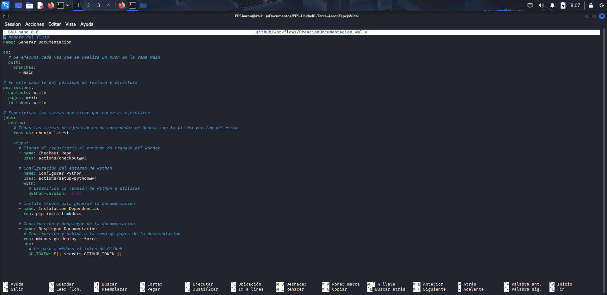
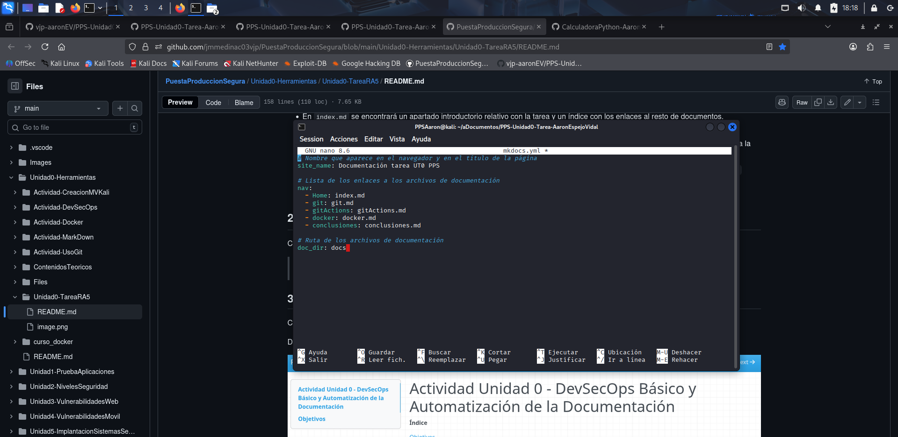
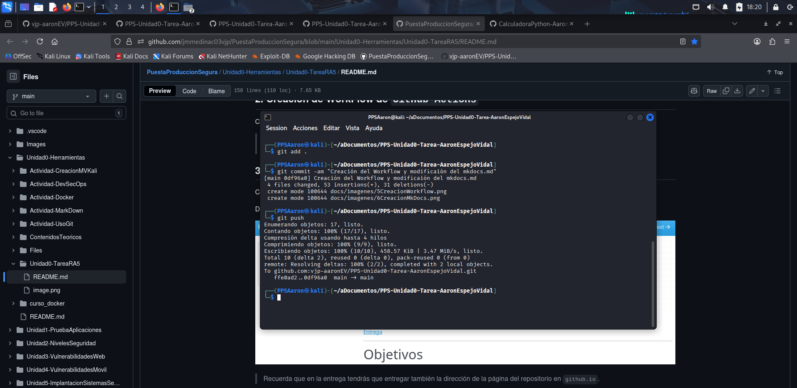
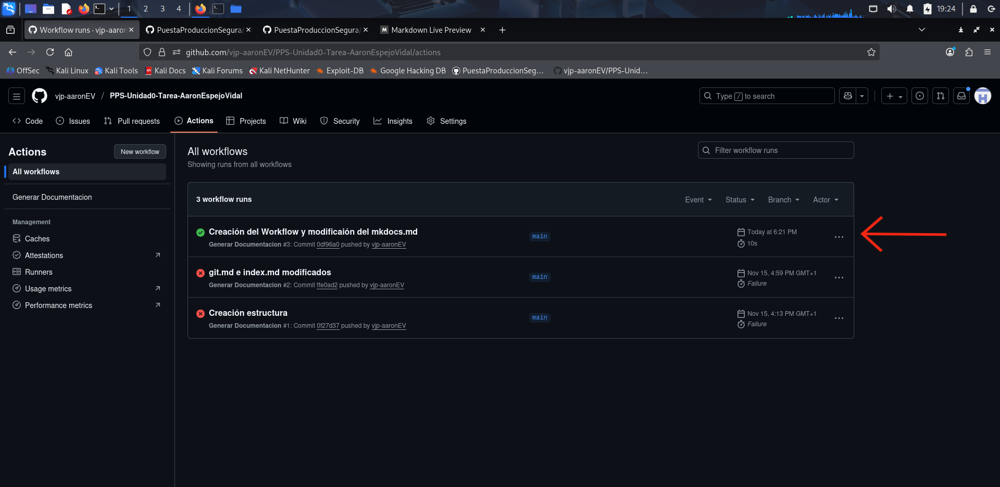

Proceso de creación del Workflow para crear la estructura de MkDocs
CreacionDocumentacion.yml
El archivo .yml que hagamos tiene que estar en la carpeta .github/workflows/, en este caso el archivo se llama: CreacionDocumentacion.yml, estos son los pasos que yo he seguido para crear este fichero:
- Lo primero que tenemos que poner en este archivo es el nombre que le queremos dar al flujo de trabajo con la etiqueta
name:. - Luego tenemos que utilizar la etiqueta
on:, dentro de esta tenemos que especificar los eventos que tienen que suceder para que se ejecute el flujo de trabajo:push:: Cada vez que se haga un push se ejcutabranches:: Especifica las ramas donde se tiene que realizar el evento para que se ejecute- main: En este caso únicamente sucede cuando se hace un push en la rama main
- Dentro del bloque de la etiqueta
permissions:tenemos que especificar los permisos que va a tener el flujo de trabajo:contents: Permite leer y escribir los archivos del repositoriopages: Permite configurar y publicar en Github Pages.id-token: Permite solicitar tokens de OpenID Connect
- Dentro del bloque de la etiqueta
jobs:tenemos que especificar los trabajos que queremos que haga el flujodeploy:: Es el nombre que le damos al flujo, puede llamarse de cualquier manera. En este caso solamente tiene un trabajoruns-on: ubuntu-latest: Especifica que todas los pasos se tienen que ejecutar en el contenedor de ubuntu-latest
steps:: Los pasos que se tienen ejecutar en el flujo. En este caso son estos:- Clonar el repositorio al entorno de trabajo del Runner
- Configurar el entorno de Python que va a utilizar MkDocs
- Instalación de las dependencias necesarias para MkDocs e instalar MkDocs con el comando dentro del contenedor de ubuntu:
pip install mkdocs - Construcción y despliegue de la documentación
Captura de pantalla del documento CreacionDocumentacion.yml

Este es el código en texto:
# Nombre del flujo
name: Generar Documentacion
on:
# Se ejecuta cada vez que se realiza un push en la rama main
push:
branches:
- main
# En este caso le doy permisos de lectura y escritura
permissions:
contents: write
pages: write
id-token: write
# Especificar las tareas que tiene que hacer al ejecutarse
jobs:
deploy:
# Todas las tareas se ejecutan en un contenedor de Ubuntu con la última versión del mismo
runs-on: ubuntu-latest
steps:
# Clonar el repositorio al entorno de trabajo del Runner
- name: Checkout Repo
uses: actions/checkout@v3
# Configuración del entorno de Python
- name: Configurar Python
uses: actions/setup-python@v4
with:
# Especifica la versión de Python a utilizar
python-version: '3.x'
# Instalo mkdocs para generar la documentación
- name: Instalacion Dependencias
run: pip install mkdocs
# Construcción y desplegue de la documentación
- name: Desplegue Documentacion
# Construcción y subida a la rama gh-pages de la documentación
run: mkdocs gh-deploy --force
env:
# Le paso a mkdocs el token de Github
GH_TOKEN: ${{ secrets.GITHUB_TOKEN }}
Creación mkdocs.yml
- Primero de todo tenemos que utilizar la etiqueta
site name:para especificar el título de la pestaña y de la página. - Dentro del bloque de la etiqueta
navponemos la lista de los enlaces a los archivos de la documentación para que mkdocs sepa cuales son. - En la etiqueta
doc_dirs:tenemos que especificar la carpeta donde están los archivos de documentación del proyecto.
Captura de pantalla del documento mkdocs.yml

Este es el código en texto:
# Nombre que aparece en el navegador y en el título de la página
site_name: Documentación tarea UT0 PPS
# Lista de los enlaces a los archivos de documentación
nav:
- Home: index.md
- git: git.md
- gitActions: gitActions.md
- docker: docker.md
- conclusiones: conclusiones.md
# Ruta de los archivos de documentación
doc_dir: docs
Push de la creación del Workflow y comprobación de funcionamiento
En estas dos capturas de pantalla se va a poder ver como hago el push a github y en la pestaña de 'Actions' de la página web de Github se ha ejecutado el Workflow correctamente
- git add .: Para añadir todos los cambios en el área de preparación
- git commit -am 'mensaje': Para guardar una instanea de los cambios del repositorio local y con el parámtero -am para poner un mensaje en el commit
- git push: Sube al repositorio online todos los cambios en la rama actual

